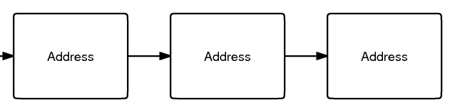
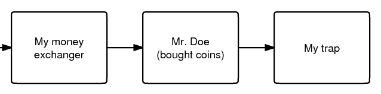

Information on this page may be outdated
While the Bitcoin technology can support strong anonymity, the current implementation is usually not very anonymous.
The main problem is that every transaction is publicly logged. Anyone can see the flow of Bitcoins from address to address (see first image). Alone, this information can't identify anyone because the addresses are just random numbers. However, if any of the addresses in a transaction's past or future can be tied to an actual identity, it might be possible to work from that point and guess who may own all of the other addresses. This identity information might come from network analysis, surveillance, or just Googling the address. The officially encouraged practice of using a new address for every transaction is designed to make this attack more difficult. 
{kind=link}
The second image shows a simple example. Someone runs both a money exchanger and a site meant to trap people. When Mr. Doe buys from the exchanger and uses those same coins to buy something from the trap site, the attacker can prove that these two transactions were made by the same person. The block chain would show: 
{kind=link}
- Import coins from address A. Send 100 to B. Authorized by (signature).
- Import coins from address B. Send 100 to C. Authorized by (signature). Bitcoin transactions do not have a "from" address but if the attacker believes that address B is controlled by Mr. Doe because the attacker received $5 from Mr. Doe's PayPal account and then sent 100 BTC to that address then they can infer the identity of the party sending to C. This assumption is not always correct because address B may have been an address held on behalf of Mr. Doe by a third party and the transaction to C may have been unrelated.
Another example: someone is scammed and posts the address they were using on the Bitcoin forum. It is possible to see which address they sent coins to. When coins are sent which were previously send to this (the scammer's) address, the addresses that receive them can also be easily found and posted on the forum. In this way, all of these coins are marked as "dirty", potentially over an infinite number of future transactions. When some smart and honest person notices that his address is now listed, he can reveal who he received those coins from. The Bitcoin community can now ask some pointed questions, "Who did you receive these coins from? What did you create this address for?" Eventually the original scammer will be found. Clearly, this becomes more difficult the more addresses that exist between the "target" and the "identity point".
You might be thinking that this attack is not feasible. But consider this case:
- You live in China and want to buy a "real" newspaper for Bitcoins.
- You join the Bitcoin forum and use your address as a signature. Since you are very helpful, you manage to get 30 BTC after a few months.
- Unfortunately, you choose poorly in who you buy the newspaper from: you've chosen a government agent! Maybe you are under the mistaken impression that Bitcoin is perfectly anonymous.
- The government agent looks at the block chain and Googles (or Baidus) every address in it. He finds your address in your signature on the Bitcoin forum. You've left enough personal information in your posts to be identified, so you are now scheduled to be "reeducated".
You need to protect yourself from both forward attacks (getting something that identifies you using coins that you got with methods that must remain secret, like the scammer example) and reverse attacks (getting something that must remain secret using coins that identify you, like the newspaper example).
Staying Anonymous
By necessity the history of all the bitcoins must be highly public. However, if one has bitcoins on paid to address, one can theoretically choose the coins they spend in a way that will minimize the amount of information they leak. Choosing personally generated coins or an address that you know doesn't reveal information would protect you. Unfortunately, the default Bitcoin client doesn't support this currently, so you must assume that your entire balance can identify you if any of the addresses can.
You may consider a bitcoin to be "less-anonymous" when an attacker could feasibly find the true identity of a very recent owner of the bitcoin, perhaps because one of the bitcoin addresses was posted to a website, or because he knows some identifying information through other means.
If your balance has been contaminated by both anonymous and non-anonymous coins, you may take action to make it "clean".
Recommended way of anonymizing your balance:
- Send however many coins you want to anonymize to a new eWallet account as a lump sum. There are other eWallet services however the more widely used the greater the potential for anonymity. This is not an endorsement of trust in the use of eWallet services. There are no guarantees that any eWallet service won't one day take all your bitcoins and disappear. Use at your own risk.
With this method an attacker will have to gain access to the eWallet service's transaction logs to continue to follow you in the transaction history.
The protection that this method offers is significantly reduced if you are trying to anonymize more than about 10% of the total number of Bitcoins that the eWallet service holds. You'll end up getting your own coins back instead of other users' coins. Withdrawing Bitcoins more slowly and in smaller increments will help reduce this problem. Sending coins to an eWallet service in the largest single transfer possible will also help.
To further enhance your anonymity, you can:
- Send Bitcoins from one eWallet sevice to another and then to yourself. Each transfer needs to be painstakingly investigated and many transfers will present insurmountable difficulty.
Once you have an anonymous balance set up, be sure to keep your anonymous and non-anonymous balances completely separate.
A future version of the client will have more control which will allow the sender to specify which coins to use in a transaction (2.1).
In the future, trusted relay servers operating on the ?friendly addresses with enhanced privacy protocol could provide bitcoin users strong anonymity with increased convenience, thereby eliminating the need to make a trade-off between privacy and ease of use.
Helping other people stay anonymous
- Set up a real external mixing service. Make it like an eWallet service but make sure that a user never withdraws the same coins that are put in. Also delete empty addresses and transaction logs.
- Even if you're not a programmer, you can make a slightly less secure version of an external mixing service (as a Tor hidden service, preferably):
- Set up two Bitcoin installations.
- Put some amount of BTC in installation B. This is the maximum amount of BTC you can deal with at once (for all customers).
- Customers send BTC to installation A. You send them an equal number of coins (or minus a fee) from installation B. Send as 10 to 50 BTC increments.
- Send all coins from A to B when all orders are satisfied. You can't send coins from A to B if you have any orders that have not been satisfied from B.
- This can be automated, or you can do everything manually.
- Put lots of bitcoins in an eWallet service and keep it there. If anyone uses the anonymization method described in "staying anonymous" above, this will enhance it. Send in smaller increments if a large amount is transferred.
CoinJoin
While external mixers are useful and historically important, they have several problems. The mixer may also steal the customer's coins. Thus the mixer service will depend significantly on it's reputation to maintain customer's privacy and not steal their money, which allows them to charge a significant fee far above the marginal cost which takes advantage of this reputation.
CoinJoin is a special kind of bitcoin transaction that solves these problems. It is a kind of smart contract which does not allow any party to steal the coins of any other party.
Legality
Obviously, using Bitcoin anonymity techniques for the purposes of money laundering is illegal, but participating or running schemes which others use for money laundering may also be illegal or at least leave the participant vulnerable to accusations of aiding criminals and terrorists. Bitcoin anonymity techniques involving bitcoins worth large amounts of money (over some value between FJ$1,100 and US$58,000, depending on your jurisdiction) is illegal in most jurisdictions, being in violation of anti-structuring laws.
See Also
- Anonymity & Security
- CoinJoin
- RFC: Bitcoin Mixnet
- anonymity
- Patching The Bitcoin Client To Make It More Anonymous
- An Analysis of Anonymity in the Bitcoin System research by Fergal Reid, Martin Harrigan (discussion)
- Top Seven Ways Your Identity Can Be Linked to Your Bitcoin Address
- Tips to improve your bitcoin anonymity